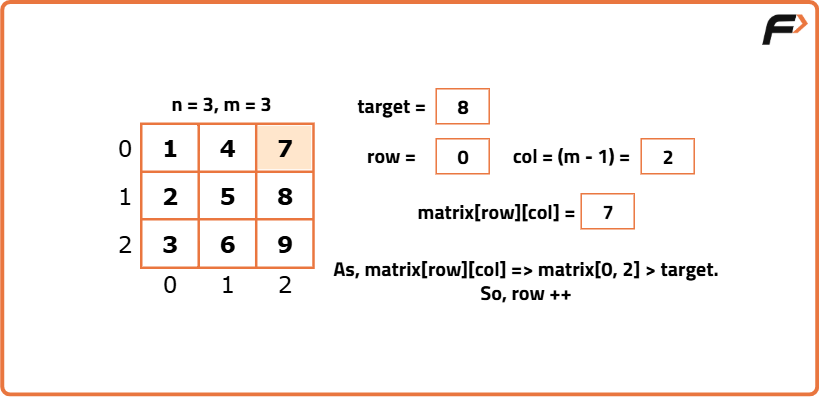
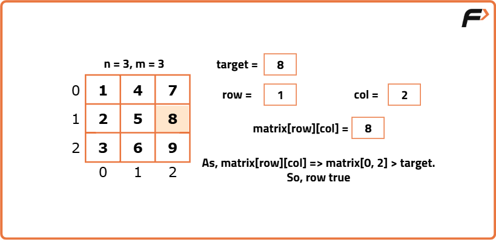

Search in a row and column-wise sorted matrix
Problem Statement: You have been given a 2-D array 'mat' of size 'N x M' where 'N' and 'M' denote the number of rows and columns, respectively. The elements of each row and each column are sorted in non-decreasing order. But, the first element of a row is not necessarily greater than the last element of the previous row (if it exists). You are given an integer ‘target’, and your task is to find if it exists in the given 'mat' or not.
Examples
Example 1:
Matrix=
1 4 7 11
2 5 8 12
3 6 9 16
10 13 14 17
Target: 9
Output: Found at (2,2) (0-indexed)
Example 2:
Matrix=
5 10 15
6 12 18
8 16 20
Target: 7
Output: Not Found
Disclaimer: Here is the practice link to help you assess your knowledge better. It's highly recommend trying to solve it before looking at the solution.
Brute Force
Algorithm
- We will use a loop to select a particular row at a time.
- Next, for every row, we will use another loop to traverse each column.
- Inside the loops, we will check if the element i.e. matrix[i][j] is equal to the ‘target’. If we found any matching element, we will return true.
- Finally, after completing the traversal, if we found no matching element, we will return false.
Code
#include <bits/stdc++.h>
using namespace std;
// Class to handle all matrix-related operations
class MatrixSearch {
private:
vector<vector<int>> matrix; // 2D vector to store the matrix
public:
// Constructor to initialize the matrix when object is created
MatrixSearch(vector<vector<int>>& mat) {
matrix = mat;
}
// Function to search for a target element in the matrix
bool searchElement(int target) {
int n = matrix.size(); // Number of rows
int m = matrix[0].size(); // Number of columns
// Loop through each row
for (int i = 0; i < n; i++) {
// Loop through each column in the current row
for (int j = 0; j < m; j++) {
// If current element matches the target, return true
if (matrix[i][j] == target) {
return true;
}
}
}
// If we reach here, target was not found
return false;
}
};
int main() {
// Define a 2D matrix (row-wise and column-wise sorted)
vector<vector<int>> matrix = {
{1, 4, 7, 11, 15},
{2, 5, 8, 12, 19},
{3, 6, 9, 16, 22},
{10, 13, 14, 17, 24},
{18, 21, 23, 26, 30}
};
// Create object of MatrixSearch class and pass matrix to it
MatrixSearch ms(matrix);
// Search for target element 8
bool found = ms.searchElement(8);
// Output result
cout << (found ? "true\n" : "false\n");
return 0;
}
Complexity Analysis
Time Complexity: O(N X M), where N = given row number, M = given column number in order to traverse the matrix, we are using nested loops running for n and m times respectively.
Space Complexity: O(1) as we are not using any extra space.
Better Approach
Algorithm
- We will use a loop to select a particular row at a time.
- Next, for every row, i, we will check if it contains the target using binary search.
- After applying binary search on row, if we found any element equal to the target, we will return true. Otherwise, we will move on to the next row.
- Finally, after completing all the row traversals, if we found no matching element, we will return false.
Code
#include <bits/stdc++.h>
using namespace std;
// Class to handle binary search operations on a matrix
class MatrixSearch {
private:
vector<vector<int>> matrix; // Store the 2D matrix
// Helper function: Perform binary search on a 1D vector
bool binarySearch(vector<int>& nums, int target) {
int n = nums.size();
int low = 0, high = n - 1;
// Binary search loop
while (low <= high) {
int mid = (low + high) / 2; // Middle index
if (nums[mid] == target) {
return true; // Target found
}
else if (target > nums[mid]) {
low = mid + 1; // Search in the right half
}
else {
high = mid - 1; // Search in the left half
}
}
return false; // Target not found
}
public:
// Constructor to initialize the matrix
MatrixSearch(vector<vector<int>>& mat) {
matrix = mat;
}
// Function to search the target in the entire matrix
bool searchElement(int target) {
int n = matrix.size(); // Number of rows
// Loop through each row and apply binary search
for (int i = 0; i < n; i++) {
if (binarySearch(matrix[i], target)) {
return true; // Target found in current row
}
}
return false; // Target not found in any row
}
};
int main() {
vector<vector<int>> matrix = {
{1, 4, 7, 11, 15},
{2, 5, 8, 12, 19},
{3, 6, 9, 16, 22},
{10, 13, 14, 17, 24},
{18, 21, 23, 26, 30}
};
MatrixSearch ms(matrix);
bool found = ms.searchElement(8);
cout << (found ? "true\n" : "false\n");
}
Complexity Analysis
Time Complexity: O(N*logM), where N = given row number, M = given column number. We are traversing all rows and it takes O(N) time complexity. And for all rows, we are applying binary search. So, the total time complexity is O(N*logM).
Space Complexity: O(1) as we are not using any extra space.
Optimal Approach
Algorithm
- As we are starting from the cell (0, m-1), the two variables i.e. ‘row’ and ‘col’ will point to 0 and m-1 respectively.
- We will do the following steps until row < n and col >= 0(i.e. while(row < n && col >= 0)):
- If matrix[row][col] == target: We have found the target and so we will return true.
- If matrix[row][col] > target: We need the smaller elements to reach the target. But the column is in increasing order and so it contains only greater elements. So, we will eliminate the column by decreasing the current column value by 1(i.e. col--) and thus we will move row-wise.
- If matrix[row][col] < target: In this case, We need the bigger elements to reach the target. But the row is in decreasing order and so it contains only smaller elements. So, we will eliminate the row by increasing the current row value by 1(i.e. row++) and thus we will move column-wise.
- If we are outside the loop without getting any matching element, we will return false.


Code
#include <bits/stdc++.h>
using namespace std;
// Class to perform staircase search in a 2D sorted matrix
class MatrixSearch {
private:
vector<vector<int>> matrix; // 2D matrix
public:
// Constructor to initialize the matrix
MatrixSearch(vector<vector<int>>& mat) {
matrix = mat;
}
// Function to search for target in matrix using staircase search
bool searchElement(int target) {
int n = matrix.size(); // Number of rows
int m = matrix[0].size(); // Number of columns
int row = 0; // Start from first row
int col = m - 1; // Start from last column (top-right corner)
// Traverse the matrix
while (row < n && col >= 0) {
if (matrix[row][col] == target) {
return true; // Found target
}
else if (matrix[row][col] < target) {
row++; // Move down to next row
}
else {
col--; // Move left to previous column
}
}
return false; // Target not found
}
};
int main() {
vector<vector<int>> matrix = {
{1, 4, 7, 11, 15},
{2, 5, 8, 12, 19},
{3, 6, 9, 16, 22},
{10, 13, 14, 17, 24},
{18, 21, 23, 26, 30}
};
MatrixSearch ms(matrix);
bool found = ms.searchElement(8);
cout << (found ? "true\n" : "false\n");
}
Complexity Analysis
Time Complexity: O(N+M), where N = given row number, M = given column number. We are starting traversal from (0, M-1), and at most, we can end up being in the cell (M-1, 0). So, the total distance can be at most (N+M). So, the time complexity is O(N+M).
Space Complexity: O(1) as we are not using any extra space.